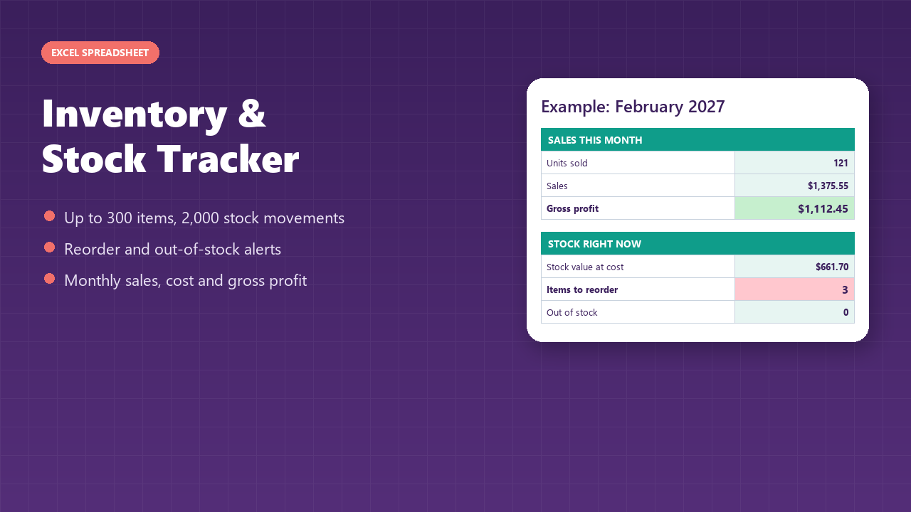

Reorder point calculator: when should you reorder stock?
Order too late and you run out while the supplier ships; order too early and cash sits on the shelf. The reorder point is the stock level at which you place the next order, so it arrives just before you run out.
How it works
- Average daily sales = units sold / number of days.
- Reorder point = average daily sales x lead time (days) + safety stock, rounded up to a whole unit.
- When stock on hand is at or below the reorder point, it's time to order. Days of stock left = stock on hand / average daily sales.
Example with the numbers filled in: 90 units sold in 30 days is 3 a day. With a 7-day lead time and 5 units of safety stock, the reorder point is 3 x 7 + 5 = 26 units. With 40 on hand you have about 13 days of stock, so it's not time to order yet.
A planning estimate based on the numbers you enter - if sales are seasonal or your supplier is unreliable, keep more safety stock. Nothing you type is sent anywhere - it runs in your browser.

Track every item's stock and reorder alerts
The Inventory Tracker Spreadsheet (made for Microsoft Excel) keeps up to 300 items with a reorder level for each, and shows a status - Reorder, Out of stock or Below zero - from a 2,000-row stock movements log (received, sold, customer returns and adjustments). A dashboard shows units sold, sales, cost of goods sold and gross profit for any month, plus a 12-month sales chart. You can enter amounts in your own currency: cells show a $ sign and nothing is converted. A record-keeping tool, not accounting or tax advice.
Get it - A$16.95